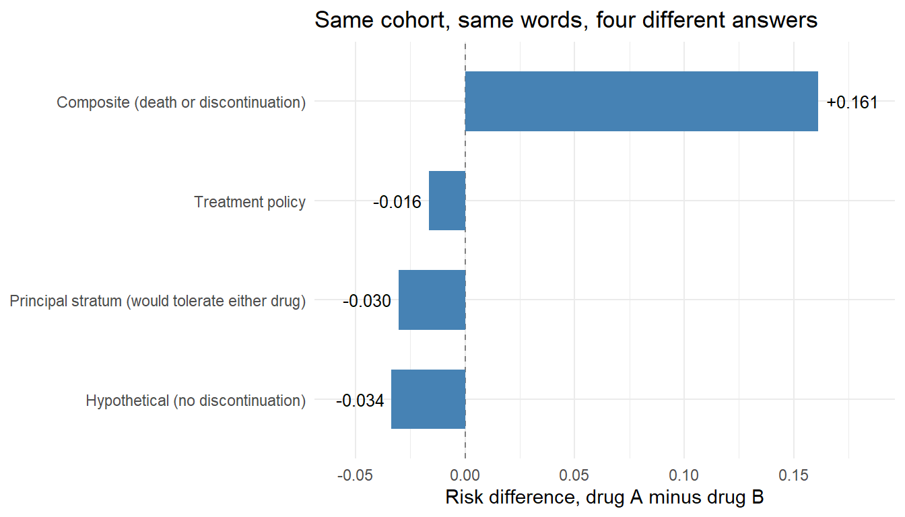

library(dplyr)
library(ggplot2)
set.seed(2026)
n <- 20000
# Baseline covariates
age_c <- rnorm(n, 0, 1) # standardized age
cd4_c <- rnorm(n, 0, 1) # standardized baseline CD4
frail <- rnorm(n, 0, 1) # measured frailty index
# Treatment: drug A (1) versus drug B (0), confounded by baseline health
pA <- plogis(-0.2 + 0.30 * age_c - 0.35 * cd4_c + 0.25 * frail)
A <- rbinom(n, 1, pA)
# Common random numbers: the same person's counterfactuals share these draws,
# so Y(1) and Y(0) describe the same patient under two regimes.
u_tol <- rnorm(n)
u_disc <- runif(n)
u_die <- runif(n)
# Month-3 tolerability marker (lower = worse tolerated). Drug A is harsher.
tol_of <- function(a) 0.45 - 0.85 * a - 0.30 * frail + 0.20 * cd4_c + u_tol
# Discontinuation by month 6, driven by tolerability
disc_of <- function(a) as.integer(u_disc < plogis(-1.0 - 1.5 * tol_of(a)))
# Death by month 12. Protection depends on the drug AND on staying on it.
# rep() keeps the branch vectorized when a or d is passed as a single value.
die_of <- function(a, d) {
a <- rep(a, length.out = n)
d <- rep(d, length.out = n)
protection <- ifelse(a == 1, ifelse(d == 1, 0.20, 1.10),
ifelse(d == 1, 0.10, 0.45))
as.integer(u_die < plogis(-2.3 + 0.55 * frail + 0.30 * age_c -
0.35 * cd4_c - protection))
}6 Specifying the Estimand
Attributes, intercurrent events, and what to do when death gets in the way
Estimated reading time: 35 minutes
Two analysts are handed the same claims database and the same protocol sentence: estimate the effect of drug A versus drug B on twelve-month mortality. The first analyst counts every death after the index prescription, whether or not the patient stayed on the drug. The second censors patients when they stop filling prescriptions and weights the remainder back up. They report 16 and 34 deaths averted per thousand. Neither made an error. They answered different questions, and the protocol sentence was not specific enough to tell them apart.
Chapter 5 sets out the seven steps and shows how the target trial protocol pins down the question. This chapter takes the third step and slows it down, because in real pharmacoepidemiology that step is where most of the disagreement lives. The ICH E9(R1) addendum gives a vocabulary for it that regulators, trial statisticians, and increasingly journal reviewers already use (International Council for Harmonisation 2019).
Learning objectives
- Write an estimand as five attributes rather than a sentence
- Identify the intercurrent events in a study and choose a strategy for each
- Explain why the choice of strategy changes the answer, using one cohort and four numbers
- Recognize truncation by death and say why the contrast among survivors is not a causal effect
- State what a principal stratum is and what it costs to estimate one
6.1 The five attributes
An estimand is the quantity to be estimated, described precisely enough that two analysts working separately would compute the same thing. ICH E9(R1) decomposes that description into five attributes (International Council for Harmonisation 2019).
| Attribute | Question it answers | HAART cohort example |
|---|---|---|
| Population | Which patients, at what moment? | Adults with HIV, at seroconversion, ART-naive |
| Treatment condition | Which regimes are contrasted? | Initiate HAART at seroconversion versus defer indefinitely |
| Endpoint | What is measured, on whom, when? | All-cause death within five years |
| Intercurrent events | What happens if the patient stops, switches, or dies first? | Discontinuation handled by the treatment-policy strategy |
| Population-level summary | Which contrast, on which scale? | Risk difference at five years |
Most of these appear in any well-written protocol. The fourth, intercurrent events, is what separated the two analysts in the opening paragraph, and it is the one a protocol sentence almost never contains.
The treatment condition also carries a quiet assumption: that a patient’s outcome depends on their own assignment and nobody else’s. Chapter 5 sets out when that fails and what to target instead.
The summary measure deserves a note of its own. A hazard ratio is a poor choice even when it is estimated perfectly, because it conditions on survival to each time point and so acquires a built-in selection effect (Miguel A. Hernán 2010). The risk difference at a fixed horizon carries no such baggage and states the answer in the units a clinician uses. Chapter 5 makes the same argument from non-collapsibility.
6.2 Intercurrent events
An intercurrent event is something that happens after time zero and changes either the meaning of the outcome or whether it can be observed at all. Treatment discontinuation, switching to the comparator, adding a rescue drug, and death before the outcome is measured are the four that dominate drug safety and effectiveness work.
These are not missing data. If a patient stops taking a statin at month three and dies at month nine, the death is observed; what is unclear is which question that death answers. Missing data is a separate problem with separate machinery, taken up in Chapter 20.
ICH E9(R1) names five strategies. Stated without reference to any particular study design, they are:
| Strategy | The question it targets | Typical implementation |
|---|---|---|
| Treatment policy | Effect of being assigned the regime, whatever happens afterwards | Ignore the intercurrent event, follow everyone to the endpoint |
| Hypothetical | Effect in a world where the intercurrent event could not occur | Censor at the event and adjust for the censoring mechanism |
| Composite | Effect on a combined endpoint that counts the intercurrent event as an outcome | Redefine the endpoint as either event, whichever comes first |
| While on treatment | Effect over the period the patient remains on the assigned regime | Restrict the observation window per patient |
| Principal stratum | Effect within the subgroup who would not experience the event under either regime | Requires assumptions beyond exchangeability |
Chapter 26 maps these onto survival TMLE, where the intercurrent event has a time attached and the implementation column gets considerably more interesting. The choice comes before the estimator, and it applies to a plain binary endpoint at twelve months as much as to a time-to-event analysis.
Censoring is a tool, not a question
Censoring a patient at discontinuation is an estimation move. It serves the hypothetical strategy when paired with a model for why people discontinue, and it serves the while-on-treatment strategy when the estimand really is the risk over the on-treatment window. The same keystroke implements two different estimands, so the protocol has to say which one is intended.
6.3 One cohort, four answers
In the cohort below the strategies disagree by more than any estimator choice would.
The setting is an active-comparator study. Drug A works better than drug B while a patient takes it, and it is tolerated worse, so more patients stop. A tolerability marker measured at month three drives discontinuation and also predicts death, which makes it a confounder of the discontinuation-to-death relationship and a consequence of treatment at the same time.
With the data-generating process written as functions of the assigned regime, the counterfactual worlds are one line each.
# Natural course under each assignment
D1 <- disc_of(1); D0 <- disc_of(0)
Y1 <- die_of(1, D1); Y0 <- die_of(0, D0)
# The world in which nobody discontinues
Y1_stay <- die_of(1, 0); Y0_stay <- die_of(0, 0)
estimands <- tibble::tibble(
Strategy = c("Treatment policy", "Hypothetical (no discontinuation)",
"Composite (death or discontinuation)",
"Principal stratum (would tolerate either drug)"),
`Risk difference` = c(
mean(Y1) - mean(Y0),
mean(Y1_stay) - mean(Y0_stay),
mean(pmax(Y1, D1)) - mean(pmax(Y0, D0)),
mean(Y1[D1 == 0 & D0 == 0]) - mean(Y0[D1 == 0 & D0 == 0])
)
)
estimands$`Per 1000` <- round(1000 * estimands$`Risk difference`)
knitr::kable(estimands, digits = c(0, 4, 0), align = "lrr")| Strategy | Risk difference | Per 1000 |
|---|---|---|
| Treatment policy | -0.0164 | -16 |
| Hypothetical (no discontinuation) | -0.0335 | -34 |
| Composite (death or discontinuation) | 0.1611 | 161 |
| Principal stratum (would tolerate either drug) | -0.0302 | -30 |
Show code
ggplot(estimands, aes(reorder(Strategy, `Risk difference`), `Risk difference`)) +
geom_hline(yintercept = 0, linetype = "dashed", colour = "grey50") +
geom_col(fill = "steelblue", width = 0.6) +
geom_text(aes(label = sprintf("%+.3f", `Risk difference`),
hjust = ifelse(`Risk difference` < 0, 1.15, -0.15)), size = 3.4) +
coord_flip() +
scale_y_continuous(expand = expansion(mult = 0.18)) +
labs(x = NULL, y = "Risk difference, drug A minus drug B",
title = "Same cohort, same words, four different answers") +
theme_minimal()
Discontinuation by month six runs at 43% under drug A and 24% under drug B, and that difference drives the spread. The hypothetical estimand describes a clinical world that does not exist, in which every patient tolerates whatever they are given; it is the largest benefit and the least useful number for a formulary decision. The treatment-policy estimand takes the drug as it is actually used, tolerability problems included, and reports a smaller benefit. These are the two analysts from the opening paragraph: the first computed the treatment-policy estimand, the second the hypothetical one. The composite estimand changes sign, because it counts stopping the drug as a bad outcome and drug A is stopped nearly twice as often.
None of these is the correct answer. A regulator reviewing a safety signal wants the treatment-policy number. A clinician deciding what to prescribe to a patient who has already tolerated both drugs wants something closer to the principal-stratum number. A trialist choosing a primary endpoint might reasonably pick the composite. What none of them can do is read a single number off a paper that did not say which one it computed.
The estimation problem is a separate matter, and the strategies differ sharply in how hard they are. The treatment-policy estimand needs only baseline exchangeability, so standard g-computation or TMLE applies directly:
dat <- data.frame(A, age_c, cd4_c, frail, Y = Y1 * A + Y0 * (1 - A))
qfit <- glm(Y ~ A * (age_c + cd4_c + frail), family = binomial, data = dat)
risk_under <- function(a) {
nd <- dat; nd$A <- a
mean(predict(qfit, newdata = nd, type = "response"))
}
gcomp_tp <- risk_under(1) - risk_under(0)
c(estimated = round(gcomp_tp, 4),
truth = round(estimands$`Risk difference`[1], 4))
#> estimated truth
#> -0.0140 -0.0164The two agree to within sampling error, which is what identification buys: treatment depends only on the three baseline covariates, so adjusting for them suffices.
The hypothetical estimand is harder, because discontinuation is driven by a post-baseline variable that treatment itself affects. That is the treatment-confounder feedback of Chapter 14, and it needs the longitudinal g-methods of Chapter 15 rather than a baseline adjustment. The principal-stratum estimand is harder still, for reasons the next section makes concrete.
6.4 When the intercurrent event is death
Suppose the endpoint is CD4 count at twelve months and some patients die before month twelve. Their CD4 at twelve months is not missing. It does not exist. This is truncation by death, and it breaks the estimand rather than the estimator.
The tempting move is to compare CD4 among survivors in each arm. That contrast is not a causal effect, because survival is itself affected by treatment. Conditioning on it conditions on a post-treatment variable, which opens a path between treatment and any unmeasured determinant of both survival and CD4 (Miguel A. Hernán, Hernández-Díaz, and Robins 2004). The two survivor groups are different sets of people.
The simulation below makes the size of the problem visible. Treatment is randomized, so there is no baseline confounding at all, and the drug raises CD4 by exactly 40 cells for everyone.
The naive survivor contrast reports about 13 cells against a true effect of 40. The drug keeps alive a group of frail patients who would have died without it, 22% of the cohort, and those patients have low CD4 for reasons that have nothing to do with the drug. Adding them to the treated survivor pool drags its average down. No amount of adjustment for measured baseline covariates fixes this, because the offending variable is unmeasured frailty and the damage is done by conditioning on survival.
The survivor average causal effect (SACE), the effect among patients who would survive under either assignment, is a well-defined causal quantity and the simulation recovers it exactly. The catch is that membership in that stratum is not observable. A patient who was treated and survived may be an always-survivor or may be someone the drug saved, and nothing in the data distinguishes them. Estimating the SACE requires either an extra assumption, such as monotonicity plus a model for the stratum membership, or a willingness to report bounds instead of a point estimate (Rubin 2006).
The practical options, in the order most analyses should consider them:
- Make the endpoint a composite that death cannot truncate: a ranked outcome with death as the worst rank, or days alive and out of hospital.
- Switch to a time-to-event estimand that treats death as a competing event (Chapter 26).
- Target the SACE and accept the extra assumptions.
Reporting the survivor contrast and calling it a treatment effect is the one option with no defense.
6.5 Principal strata
The always-survivors are an instance of a principal stratum: a subgroup defined by how a patient would respond to both assignments, not by anything observed (Frangakis and Rubin 2002). The same construction gives the never-discontinuers in the earlier simulation, and the compliers of instrumental-variable analysis (Chapter 28), where the stratum is patients who would take the drug if encouraged and not otherwise.
Principal strata are attractive because they are the only subgroups that stay fixed across the two arms, which makes a contrast within them causal. They are awkward because membership depends on a counterfactual. Every principal-stratum analysis pays for that with an assumption that cannot be checked from the data: monotonicity, a parametric model for stratum membership, or an exclusion restriction. State which one you are buying, and report how the answer moves when it is relaxed.
A subgroup defined by something observed after treatment, such as “patients who responded at month three”, is not a principal stratum and is not a causal subgroup. It is the survivor contrast in different clothes.
6.6 From causal estimand to statistical estimand
Once the five attributes are fixed, the estimand is a function of counterfactual quantities and still not computable. Identification turns it into a function of the observed data distribution, which is step four of Chapter 5, and estimation then targets that function. Keeping the three levels apart is what lets a reviewer see where an analysis went wrong: a misspecified estimand cannot be rescued by a better estimator, and a well-specified estimand can survive a crude one.
The discipline that makes this concrete is writing the estimand table before looking at the outcome data. Chapter 21 builds an entire workflow around that idea, with the outcome masked until the design is locked. Chapter 7 takes the same table and asks what the data have to look like for it to be estimable at all.
6.7 Check your understanding
Q1. A trial protocol says “the primary endpoint is death within one year, analyzed as intention to treat.” Which attributes are still unspecified?
The endpoint, the population-level summary, and the intercurrent-event handling are all underspecified. “Death within one year” does not say from when, so time zero is missing. “Intention to treat” names an analysis population rather than a strategy, and it says nothing about switching or rescue therapy; the treatment-policy strategy is probably intended, but only for discontinuation. The summary measure is absent, and a hazard ratio and a risk difference at twelve months answer different questions. Only the population and the treatment condition are reasonably pinned down, and even the population lacks an eligibility moment.
Q2. Your collaborator wants “the effect of the drug in patients who actually took it.” What have they asked for, and what should you offer instead?
As stated, they have asked for a contrast among patients selected on a post-treatment variable, which is the survivor contrast and is not a causal effect: the people who took drug A are not the people who took drug B. Three legitimate readings exist. If they mean the effect if everyone had stayed on treatment, that is the hypothetical strategy, estimable with longitudinal g-methods that model the discontinuation process. If they mean the effect among patients who would stay on either drug, that is a principal stratum and needs an extra assumption. If they mean the effect over the period patients remained on the drug, that is the while-on-treatment strategy. Ask which, and write it into the estimand table.
Q3. Why does the composite strategy in the worked example reverse the sign of the effect, and is that a flaw in the strategy?
The composite endpoint counts discontinuation as an event alongside death. Drug A is discontinued nearly twice as often as drug B, so those extra discontinuations swamp the mortality advantage and the combined risk comes out higher under drug A. This is not a flaw; it is the strategy doing what it was asked to do. A composite is appropriate when the intercurrent event is itself bad for the patient and you are willing to weight it equally with death. It becomes misleading when a mild, reversible event is pooled with mortality and then reported as though the drug increased deaths.
6.8 Sources and further reading
- International Council for Harmonisation (2019), the ICH E9(R1) addendum that defines the five attributes and the five intercurrent-event strategies.
- Rufibach (2019) works the strategies through to time-to-event settings and is the bridge to Chapter 26.
- Young et al. (2020) formalizes what classical survival estimands mean when competing events are present.
- Miguel A. Hernán and Robins (2016) shows how the target trial protocol fixes the estimand attributes by construction.
- Frangakis and Rubin (2002) introduces principal stratification; Rubin (2006) applies it to outcomes truncated by death.
- Miguel A. Hernán, Hernández-Díaz, and Robins (2004) gives the structural account of why conditioning on a post-treatment variable induces bias.
- Miguel A. Hernán (2010) explains why the hazard ratio is a poor population-level summary.
- Petersen and Laan (2014) and Dang et al. (2023) set the estimand step inside the wider Causal Roadmap.
6.9 What comes next
An estimand describes a study that could have been run. Chapter 7 asks what it takes to emulate that study in a registry: when the clock starts, who is eligible and when, and how a grace period for treatment initiation stops the analysis from manufacturing immortal time.